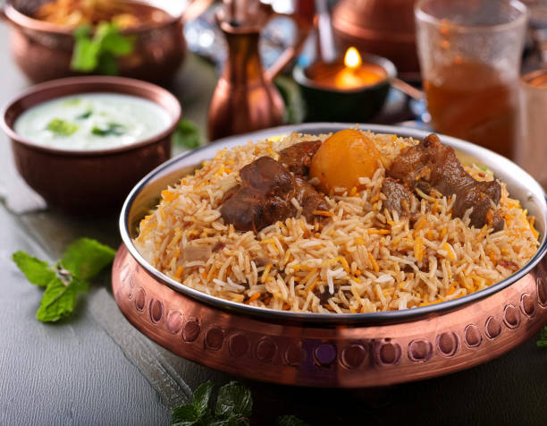
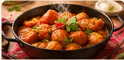
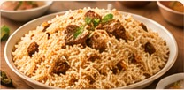
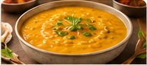
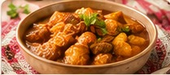
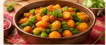

Chicken Biryani
Fragrant rice layered with spices and tender chicken.
Rs. 250Traditional Pakistani dishes made with homemade love.

Fragrant rice layered with spices and tender chicken.
Rs. 250
A rich, spicy tomato-based desi favourite.
Rs. 450
Delicately seasoned rice cooked in a flavourful broth.
Rs. 220
Comforting lentils served with steamed rice.
Rs. 180
A homestyle curry with potatoes and tender meat.
Rs. 350
A colourful mix of vegetables with traditional spices.
Rs. 200